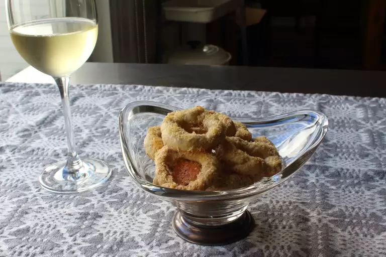

Home
Cacio e Pepe Taralli

Description
Often served with (and dipped in!) white wine, taralli are a fun and versatile Italian snack
you can flavor all sorts of ways. This pepper and cheese variety starts with a simple
unleavened dough starring white wine and olive oil. Rolled into ropes, then into rings,
they're boiled and sprinkled with cheese before baking. Once baked, the cheese forms a
crispy wafer in the middle of the ring!
Ingredients
- 1 cup all-purpose flour
- 2 teaspoons freshly ground black pepper
- 1 teaspoon kosher salt
- 1/4 cup white wine
- 2 tablespoons olive oil
- 1/2 cup finely grated Parmigiano-Reggiano cheese
Directions
- Combine flour, pepper, and salt in a mixing bowl, and stir with a spoon to combine. Pour in wine and olive oil. Mix until dough starts to come together. Knead by hand until dough is smooth and slightly elastic, about 3 minutes. Wrap dough in plastic and let rest at room temperature for 30 minutes.
- Unwrap dough and cut into 4 pieces. Roll each piece out with your palms into ropes about 10 to 12 inches long. Cut each rope into 3 pieces; roll each piece to a length of 5 or 6 inches. Twist the ends a few times and press them together to form a ring, twisting as needed to fully seal the ends.
- Preheat oven to 400 degrees F (200 degrees C). Line a baking sheet with a silicone mat (such as SILPAT®).
- Bring a pan of water (at least 3 inches) to a boil. Drop in 4 rings of dough at a time. Boil until rings float to the top, 3 to 5 minutes. Remove with a slotted spoon onto a towel-lined plate. Transfer to the prepared baking sheet.
- Sprinkle Parmigiano-Reggiano cheese over each ring; flip and grate more cheese on the other side. Flip back to the first side and apply one last grating of cheese, or until rings are thoroughly coated.
- Bake in the preheated oven until lightly golden and crunchy, 25 to 30 minutes. Remove from the baking sheet onto a wire rack and let cool completely before serving.
Check out these other recipes